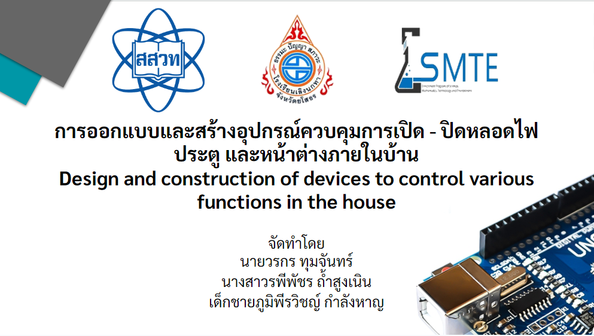

ยินดีต้อนรับสู่โปรเจ็คของฉัน
โปรเจ็คนี้เป็นเกี่ยวกับ การออกแบบและสร้างอุปกรณ์ควบคุมการเปิด - ปิดหลอดไฟ ประตู และหน้าต่างภายในบ้าน
โปรเจ็คนี้จัดทำเพื่อลดเวลาหรือเพิ่มความสะดวกสะบายภายในบ้าน(ในที่นี้ยังคงเป็นแค่แบบจำลองเท่านั้น) โดยร่วมแล้วจะเป็นโครงงานมากกว่าหรือโปรเจ็คจบครับ ช่วงมัธยมต้นปี 3 ผมได้เลือกทำเกี่ยวกับ Arduino จะเห็นว่าเป็นของม.3 ซึ่งนานมากจึงไม่ค่อยมีรูปเท่าไหร่ครับ หากท่านใดสนใจสามารถติดต่อได้เลยนะครับ โครงงานนี้แสดงถึงว่าผมสามารถทำเกี่ยวกับ Arduino ได้
โครงงานนี้เป็นเพียงของเด็กเล่นเท่านั้น ช่วงม.3 ดั่งนั้นสเกลของโครงงานจึงเล็กมาก สามารถดูคลิปนำเสนอได้ที่ youtube ในนาทีที่ 05:02 จะทดสอบเครื่องมือให้ดูครับ
ระบบที่มีหลักๆเลยคือ
-
ระบบส่งข้อมูลจากบอร์ดไปสู่อีกบอร์ด
-
ระบบเก็บข้อมูลแกน x y z
-
ระบบสั่งเปิด-ปิดอุปกรณ์ภายในบ้านแบบจำลอง

Welcome to my project!
This project is about Design and build devices to control turning on and off light bulbs, doors, and windows within the home.
This project is intended to reduce time or increase comfort in the home (here, it is only a model). Overall it is more of a project or finished project. During Mathayom 3, I chose to make something related to Arduino. You can see that it was for Mathayom 3. It's been a long time, so I don't have many pictures. If anyone is interested, you can contact me. This project shows what I can do with Arduino.
This project is only for children's play, during Mathayom 3, so the scale of the project is very small. You can watch the presentation clip on youtube (Thai language) at minute 05:02. I will test the tool for you to see.